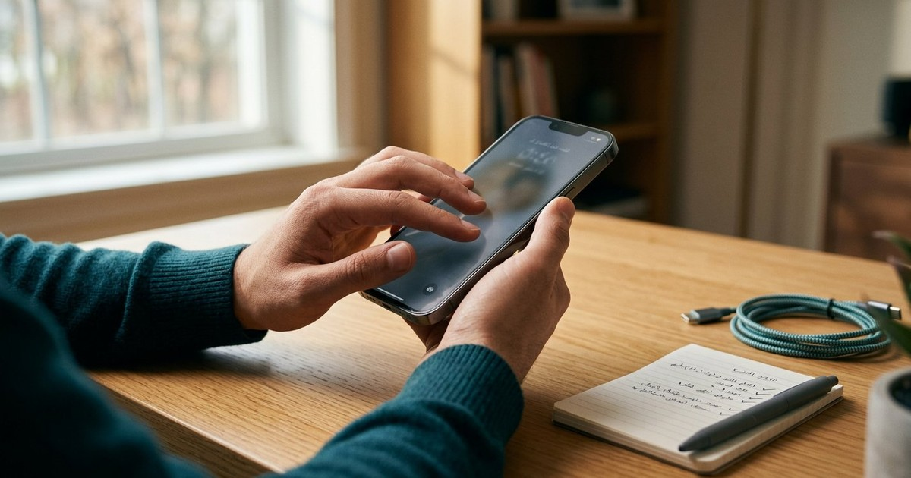

شراء هاتف مستعمل: قائمة فحص قبل الدفع
قائمة فحص عملية للهاتف المستعمل تشمل الملكية وقفل التنشيط والتحديثات والبطارية والشاشة والكاميرا والشبكة وإعادة الضبط الآمنة.

الخلاصة السريعة
لا تدفع قبل التأكد من ملكية البائع وإزالة حسابه وقفل التنشيط أمامك. افحص رقم الجهاز وفق القنوات الرسمية المتاحة في بلدك، وتحقق من آخر تحديث أمني ودعم الشركة، ثم اختبر الشاشة والبطارية والكاميرا والمكالمات والشحن. لا تشتر جهازًا مقفلًا على وعد بإمكانية تجاوز الحماية لاحقًا.
أولًا: الملكية وقفل التنشيط
- اطلب فاتورة أو دليل ملكية معقولًا وتطابق وصف الجهاز.
- دع البائع يزيل حسابه من الإعدادات بالطريقة الرسمية.
- أعد تشغيل الإعداد حتى تتأكد أنه لا يطلب حساب المالك السابق.
- لا تتعلم أو تستخدم طرق تجاوز FRP أو Activation Lock؛ قد يكون الجهاز مسروقًا أو غير قابل للاستخدام.
ثانيًا: اختبار العتاد
| الجزء | اختبار سريع | علامة خطر |
|---|---|---|
| الشاشة | خلفيات فاتحة وداكنة ولمس كل الحواف | بقع، وميض، لمس وهمي |
| البطارية | حالة البطارية إن توفرت وتجربة شحن | سخونة أو انتفاخ أو هبوط سريع |
| الكاميرا | كل العدسات والفيديو والتركيز | اهتزاز أو ضباب داخلي |
| الصوت والشبكة | مكالمة، سماعتان، Wi‑Fi وBluetooth | انقطاع أو ميكروفون ضعيف |
| المنافذ | شاحن موثوق وكابل بيانات | حركة شديدة أو شحن متقطع |
ثالثًا: النظام والتحديثات
افتح صفحة إصدار النظام والتحديث الأمني، ثم تحقق من سياسة دعم الطراز لدى الشركة. الجهاز الرخيص الذي انتهت تحديثاته قد لا يكون صفقة مناسبة للحسابات الحساسة.
رابعًا: توثيق الصفقة
سجل الطراز والسعة واللون والرقم التسلسلي أو IMEI وفق قوانين بلدك، والسعر وحالة العيوب والملحقات. استخدم وسيلة دفع موثقة وتجنب التحويل المسبق لبائع مجهول.
بعد الشراء
- أجر إعادة ضبط من الإعدادات بعد إزالة حساب البائع.
- ثبّت التحديثات قبل استعادة بياناتك.
- فعّل قفل الشاشة والنسخ الاحتياطي وميزة العثور على الجهاز.
- راقب البطارية والحرارة خلال فترة الإرجاع إن وجدت.
كيف تقرر إن كان السعر منطقيًا؟
قارن بالطراز نفسه والسعة نفسها والحالة نفسها، لا باسم السلسلة فقط. اطرح تكلفة بطارية أو شاشة محتملة وتحقق من سعر جهاز جديد بضمان. السعر المنخفض جدًا ليس مكسبًا إذا انتهت التحديثات أو كان قفل التنشيط قائمًا.
فحص البطارية دون ادعاء دقة كاملة
نسبة «صحة البطارية» مفيدة عندما يوفرها النظام، لكنها ليست قياسًا مخبريًا. شغّل فيديو، جرّب الكاميرا والمكالمة والشحن، وراقب السخونة والهبوط المفاجئ. الانتفاخ أو انفصال الشاشة علامة توقف عن الاستخدام لا مجال للمساومة عليها.
علامات إصلاح سابق
- فجوات غير متساوية حول الشاشة أو آثار لاصق.
- اختلاف لون الشاشة أو ضعف السطوع واللمس.
- براغي تالفة أو مقاومة ماء لم تعد مضمونة.
- كاميرا بها غبار داخلي أو اهتزاز غير طبيعي.
الإصلاح السابق ليس عيبًا تلقائيًا إذا كان موثقًا بقطع جيدة، لكنه يجب أن ينعكس على السعر والضمان.
قائمة التسليم
استلم الجهاز بعد إزالة حساب البائع، وتأكد من الشريحة والملحقات المتفق عليها، واكتب إيصالًا يصف العيوب المعروفة وسياسة الإرجاع. لا ترسل صورة هويتك لبائع مجهول إلا إذا كانت القوانين أو منصة موثوقة تتطلب إجراءً واضحًا.
الخلاصة
لا تجعل السعر وحده يحسم القرار. الملكية الواضحة، وقفل التنشيط المزال، والتحديثات، وسلامة البطارية والشاشة أهم من صفقة تبدو رخيصة ولا يمكن الاعتماد عليها.
المصادر والمراجع
رُوجعت المعلومات العامة في هذا المقال بالاستناد إلى المصادر التالية. الروابط الخارجية قد تُحدّث محتواها بمرور الوقت.